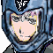

突っ込んでくる小型艦をライフルで直撃させるソードケイン。
遅れて大爆発。
飛び交う爆発と爆炎の中、飛来する鉄片を回避。ビームシールドで防ぐソードケイン。
爆炎の中から、ビームシールド全開のソードケイン。
 ダグ 「ば・・・化物か、あの爆発で・・・」
ダグ 「ば・・・化物か、あの爆発で・・・」
 キャロライン 「・・・すぐに、撤退命令を出して回収して」
キャロライン 「・・・すぐに、撤退命令を出して回収して」
 ダニエル 「りょ、了解。アベル、聴こえるか？ アベル」
ダニエル 「りょ、了解。アベル、聴こえるか？ アベル」
 アベル 「・・・はぁっ、はあっ」
アベル 「・・・はぁっ、はあっ」
アベル 「すごい殺気が・・・、あのパイロット・・・、僕を殺すつもりで・・・」
ダニエル 「アベル！？ 聴こえてるのか！？ 応答しろ、アベル！」
ナレーション 「独立自治権を勝ち取った宇宙移民者群セツルメントは、ようやく得た平和の中に麻痺し、やがては特権主義社会を生み出し、結局は自らが小セツルメントへの圧政を強いるようになる。時に宇宙世紀２５５年。各地で起きたセツルメント内紛争は、体制側と、反体制側に別れてその共同戦線を張り、セツルメント間による強大な戦禍を巻き起こしつつあった」
タイトル
|
− G of the black body − |
アベル 「大丈夫ですよ、ケーラー先生。担架なんて・・・。何処にも怪我してないんですし」
 ケーラー 「いいから安静にしたまえ。今の君は極度の疲労と興奮状態にある」
ケーラー 「いいから安静にしたまえ。今の君は極度の疲労と興奮状態にある」
 ＡＪ 「ソードケインなら心配するな。装甲が持っていかれた程度だ」
ＡＪ 「ソードケインなら心配するな。装甲が持っていかれた程度だ」
アベル 「でも、早く戻らないと、さっきの敵がまた・・・」
ケーラー 「イヴリンがいる。君は君の回復につとめる事が、今の任務だ」
アベル 「でも」
ケーラー 「黙るんだ」
ダニエル 「急げ！ 連中の追撃がある前に、この宙港を離れるぞ！」
ダニエル 「おい、イヴリン！ ソードケインが出られないんだぞ！ ヴォーテックスの準備、万全にしておけよ！」
 イヴリン 「はいはい。・・・それにしてもソードケイン、酷い損傷ね」
イヴリン 「はいはい。・・・それにしてもソードケイン、酷い損傷ね」
 ジーン 「いいや。装甲以外はほとんど無事だぜ。コイツは、ヴォーテックスと違って、チタン装甲じゃない。特殊樹脂発泡体だ。磨耗する事で中身を守る仕組みになってる」
ジーン 「いいや。装甲以外はほとんど無事だぜ。コイツは、ヴォーテックスと違って、チタン装甲じゃない。特殊樹脂発泡体だ。磨耗する事で中身を守る仕組みになってる」
イヴリン 「樹脂ぃっ！？ そんなのが装甲になるの！？ それもあんな質量の爆発に、この小型機で！？」
ジーン 「なるさ。衝撃にゃ弱いが、ビーム兵器に対する耐性は抜群だ」
イヴリン 「衝撃に弱いって・・・、それでアベルは無事なの？」
ジーン 「心配する事ァねえや。敵の追撃があるまでに復帰ってのは難しそうだがな」
イヴリン 「アタシがいるんだけどね。あんまり頼りにされてないみたいけど」
ジーン 「頼りにしてますって」
イヴリン 「アベルの次ぐらいに、でしょ」
ジーン 「まぁな。ビームシールドだけじゃ防ぎ切れないだろう全てを、アベルのヤツが避けたってのは紛れもない事実だ」
イヴリン 「あの爆炎じゃ、まともに視界なんか効かない筈よ。クレイドル機関ってのはモンスター牧場なのかしら」
ジーン 「あぁ？ お前さんは議会軍出身だったっけ？」
イヴリン 「そうよ。ザカリアとアベルが純クレイドル産。パーチはセグメント・フォース出身。バーナバスと・・・ケネスは傭兵出身だったわ」
ジーン 「グレイゾンってのは奇妙な組み合わせだぜ。ある意味じゃ敵同士が集まってるんだからな」
イヴリン 「・・・ケネスがいないけどね」
ジーン 「ケネス・ハント・・・」
キャロライン 「何なんですか？ ドクター。この身体機能は・・・」
ＡＪ 「さすがに、知っていても驚くな。この数値は」
ケーラー 「今さら何を言ってる。アベルの能力は、常人などと比べものにならない。スポーツ界に放り込めば、一・二年の訓練でメダルの二つや三つは簡単に獲れる」
キャロライン 「・・・それで、アベル君の容態は？」
ケーラー 「今は薬で眠ってるだけだ、問題ない。アベルは敏感過ぎるだけだ」
ＡＪ 「敏感・・・、一種の超能力ってヤツですか？」
ケーラー 「違うな。一昔前はＮＴなんて言葉が流行して、それが超能力であるかのように持て囃されたらしいが、私の考えは違う」
キャロライン 「つまり？」
ケーラー 「嬢ちゃん、目を閉じてみろ」
キャロライン 「じょ・・・、私は艦長ですっ」
ケーラー 「いいから閉じろ」
キャロライン 「っ・・・はい」
ケーラー 「何を感じる？」
キャロライン 「手をかざしましたね」
ケーラー 「そうだ。目で見ていないのになぜ感じる？」
キャロライン 「そりゃ、目を閉じても光とか、温度とか風とか・・・」
ケーラー 「それだよ。第六感などと呼ばれるものは存在しない。研ぎ澄まされた五感こそが第六感の正体だ」
ＡＪ 「ＮＴは人の心を読んだり、マシンを手足のように扱ったりするというが・・・」
ケーラー 「違うな。ドライバーはタイヤを介しても路面の状況を知る。給仕は客の要求を察知する。芸人はステージの空気を読む」
ＡＪ 「全てはその延長だと？」
ケーラー 「そうだ。五感。経験。本能。全てはオカルトではなく、サイエンスだよ」
キャロライン 「でも、ドクター。ＮＴの確証とも言われる脳波制御システムはどう説明されるんです？」
ケーラー 「・・・君は、エーテルを知っているかね？」
ＡＪ 「エーテル？」
ケーラー 「万有引力によって存在を否定された万物の源となるエネルギーだよ。当時、真剣に研究していた連中は笑い者だ」
ケーラー 「だが、科学とはそう言うものだ。人類の石器時代にも電気はあったが、誰ひとりもそれは扱えなかった。その存在さえ知らず、神の力と崇めた。しかし、今は誰でも容易に扱える」
ケーラー 「人間の脳波が、生物や物質に対して影響を与えるという事がわかってから、せいぜい２００年。ただそれだけの事だよ」
キャロライン 「アベル君は単純に、それらの能力が高いと・・・」
ケーラー 「いかにも。単純に数値で言えば、常人の十倍以上だ。だから、自分に害なす気配や、危険を敏感に感知し過ぎる。まだ実戦慣れしていないから、その毒気に負けた」
ＡＪ 「それを制するようになれば、まさに最強、か」
ケーラー 「最強になってもらわねば、困るな。一度目は君の失態で機体もパイロットも失っている」
ＡＪ 「痛い所を突いて来るよ、ドクターは」
 コッツォ 「予定通り、連中が動き始めました」
コッツォ 「予定通り、連中が動き始めました」
ダグ 「よし！ ギルバート、コッツォ、バルバロイの英雄とやらを叩き潰すぞ！」
 ギルバート 「はい。先輩の敵は必ず取ります！」
ギルバート 「はい。先輩の敵は必ず取ります！」
ダグ 「いいか、口惜しい事は忘れろ。あのＧモドキの破壊には目もくれるな。目標は、ヤツらの艦だ。艦がなくなれば、どんな強いマシンもいずれは動けなくなる。艦だけに集中しろ！」
ギルバート、コッツォ 「了解！」
ダグ 「ダージェンス隊、Ｇフェンサー出るぞ！」
 ギルバート 「ヤツら、二機で来ますかね？」
ギルバート 「ヤツら、二機で来ますかね？」
ダグ 「前回で痛い目を見た以上、二機で来る。もし一機しか出ないのなら、それは出られないという事だ」
ギルバート 「チャンス、ですね」
ダグ 「もう一度言うぞ、目標は艦だ！ マシンは足止め出来れば充分だからな！」
ギルバート、コッツォ 「了解！」
 ケネス 「おっ、あいつら本気だぜぇ？」
ケネス 「おっ、あいつら本気だぜぇ？」
 ボッシュ 「いい場面に出会えたじゃないか、ケネス」
ボッシュ 「いい場面に出会えたじゃないか、ケネス」
ケネス 「ボッシュよぅ。随分と探しまくって、ようやく出会えたんだぜ。もう少し劇的に表現しろよ」
ボッシュ 「ここで会ったが一〇〇年目ってか？」
ケネス 「オレ、まだピッチピチの２５歳」
ボッシュ 「寝言は女のものしか聞かない事にしてる。・・・それで、どうする？」
ケネス 「おー、参ったなぁ。これじゃ、オレがグレイゾンを助ける事になるぜ？」
ボッシュ 「文句言うな。グレイゾンの尻尾を掴むまでは、泳がせなきゃならん」
ケネス 「ま。いいぜ。グレイゾンに味方するつもりはナイが、それでエクレシアが助かってる事も事実だ」
ボッシュ 「ただし、忘れるなよ。確かに今回、俺達はグレイゾンに味方する。だが、グレイゾンの連中からすれば、俺達は敵のまんまって事だ」
ケネス 「そりゃ、怒ってるだろうしな。・・・ま。オレも怒ってる訳だけど」
ボッシュ 「ケネス・・・お前・・・」
ケネス 「行くぜ、サイファーで出る」
ボッシュ 「お前の腕は信じてるが、油断はするなよ」
ケネス 「心配すんな。ちょっとばかしタイミング良く参戦して、グレイゾンに恩を売って来るぜ」
ボッシュ 「ふん。・・・それから、無茶な戦闘は避けろよ。お前がやられるとは思っちゃいないが、サイファーの修理が追いつかん」
ケネス 「そんな事は敵のヤツらに言ってくれ。壊すのは俺じゃねえ」

アイキャッチ「Ｇ−ＧＵＩＬＴＹ」
ダニエル 「来ました！ 敵影です！ マシン・・・５機！」
キャロライン 「第一戦闘配備！ イヴリン！ すぐに出撃して！」
イヴリン 「了解！ ヴォーテックス、出ます！」
ダニエル 「Ｍ粒子、散布しますか！？」
キャロライン 「待って。視認範囲内なら追尾兵器は使わないはずよ。敵の撃破を最優先して」
ダニエル 「了解！ 各員第一戦闘配備！ マシンを艦に近付けるな！」
キャロライン 「相手の目標は、おそらくこの艦よ。イヴリン！ マシン形態で迎撃して！ 敵を通しちゃダメよ」
イヴリン 「言われなくても！」
ギルバート 「悪いが、お前と遊んでる余裕はない！」
イヴリン 「遊んで貰うわよ！」
ダグ 「邪魔だ！」
イヴリン 「抜かれた！？」
ダグ 「ふふん！ 紫一機か！ 白いのはさすがに動けんか！」
イヴリン 「三機っ！」
ダグ 「戦力に差があろうと、はじめから時間稼ぎの相手とは戦いにくかろう！？」
イヴリン 「くっ」
アベル 「うぁっ、艦が攻撃受けてるの！？」
ＡＪ 「大丈夫だ。イヴリンがいる」
アベル 「僕ならもう平気です。出ます」
ＡＪ 「まだ休んでいろ」
ケーラー 「目が覚めたんなら、身体的に問題はないぞ、ダグラス長官」
ＡＪ 「しかし・・・」
アベル 「お願いします！ 出してください！」
ＡＪ 「ソードケインが出撃できるならば、許可しよう」
アベル 「ありがとうございます！」
 兵士 「被弾したぞっ、処置急げ！」
兵士 「被弾したぞっ、処置急げ！」
兵士 「負傷兵がいるぞっ」
掛け抜けるアベル。
ジーン 「おぅ！ ボウズ、もういいのか！？」
アベル 「僕なら無事です！ ソードケインは！？」
ジーン 「出られる事は出られるが、装甲の一部がまだ換装してない」
アベル 「そこに当てなきゃいいんでしょ！？」
ジーン 「そりゃまぁ、そうだが・・・」
 アベル 「アベル、ソードケイン、出ます！」
アベル 「アベル、ソードケイン、出ます！」
イヴリン 「こんなっ、くっっ」
ダグ 「なにっ！？」
イヴリン 「アベル！？」

ケネス 「御指名は頂いておりませんが、ケネス・ハントが、及ばずながら助太刀に参りましたぁっ」イヴリン 「Ｇサイファー！？ まさか、ケネス！？」
ケネス 「悪いけど、まだオデッセイアにゃ沈んでもらっちゃ困るんだよ」
ダグ 「黒いＧモドキだとっ！？ 三機いたのか！？」
ケネス 「コックピットは外してやるから、撤退しな！」
ダグ 「くそっ」
コッツォ 「来たかっ！ 白いの！」
アベル 「どいてよっ！」
コッツォ 「馬鹿なっ、ビームシールドが・・・」
ギルバート 「なんだと！？ 今、ビームシールドを突き破ったように見えた・・・！」
アベル 「お前も！」
ギルバート 「・・・錯覚なんかじゃない！ 我が軍で開発中だと言われている・・・ピアシング・レーザー！ なんでバルバロイがこんなものを！」
アベル 「離れろっ」
ギルバート 「くっ・・・撤退する！ コッツォ！」
ギルバート 「コッツォ！」
アベル 「イヴリンさん！」
イヴリン 「・・・ケネスなのね？」
ケネス 「いよう、元気？ その声、イヴリンだろ」
イヴリン 「よくもまぁ、のこのこと出て来られたものね」
ケネス 「そーいや、お前にゃ別れのキスひとつもなかったっけな。拗ねてんの？」
イヴリン 「機密を略奪しての脱走。・・・立派な反逆罪よ」
ケネス 「追われる身も楽しいぜ？ お前も、こっちに来る？」
イヴリン 「アンセスターなんて宇宙海賊を気取ってるだけならまだしも、あたしの前にしゃしゃり出て来るなんてね・・・」
ケネス 「助けてやったって事で、このまま見逃すってのはどう？ 昔のよしみでさ」
イヴリン 「逃がす訳ないでしょ！」
ケネス 「心意気は買うけど、お前のヴォーテックスでオレのサイファーに勝てると思うのは、思い上がりだろ？」
イヴリン 「その態度の方が思い上がりよ！」
ケネス 「そうでもないぜ？」
イヴリン 「くっ」
アベル 「イヴリンさんっ！」
ケネス 「ちっ、ソードケイン！ 新人さんかい！」
イヴリン 「アベル！？」
アベル 「Ｇシリーズ！？」
モニタがケネスのサイファーを認識する。
ケネス 「さすがに２機じゃ分が悪いな。逃げさせてもらうぜ」
アベル 「待て！」
イヴリン 「ダメよ、アベル！ 待ちなさい、追っちゃダメ！」
ケネス 「悪いけど、今あんたらと争う気はねえんだわ。まだまだ、あんたらにゃ、やって貰わなきゃならない事があるんでね」
アベル 「ＵＮ−ＪＡＣっ！？」
ケネス 「つー事でよ。オレに撃たせないでくれよ？ 逃げさせてもらうぜ」
アベル 「くっ」
イヴリン 「アベル、議会軍は撤退したわ。帰艦しましょう」
アベル 「今の・・・、Ｇだった・・・」
イヴリン 「Ｇの外装を真似たマシンは多いわ」
アベル 「違います、あれ、Ｇシリーズでした！」
イヴリン 「議会軍にも似たのがいるでしょ、アレと同じよ」
アベルの自室
アベル 「そんな・・・！」
アベル 「ない？」
アベル 「そんなはずはない。確かに反応してた」
アベル 「あのＭマシンのデータがなくなってる・・・」
アベル 「あのマシンは・・・一体、何なんだ」
ダニエル 「アベルのヤツ、何度もアクセスを試みてますね」
ＡＪ 「だろうな。・・・サイファーの記録はカモフラージュしてるな」
キャロライン 「接触の際、会話を交わした可能性もありますので、ケネス・ハント、アンセスターに関する記録も同様に処置しました」
ＡＪ 「うむ。・・・アベルは純粋な子だ。我々から反逆者が出たなんて事は、知らない方がいい・・・」
キャロライン 「しかし、アンセスターとの衝突は、いずれ避けられなくなります」
ＡＪ 「彼らとの和解は有り得ないだろうな。議会やセグメント側との和解以上に」
キャロライン 「ですが、現時点ではまだ、共闘の可能性があります」
ＡＪ 「使える内は、海賊でもなんでも、せいぜい利用させてもらうさ」
自室にて、しつこくキーを叩き続けるアベル。

ナレーション 「近付きつつある議会軍本隊。対抗する手立ては奇襲しかない。だが、ダグはその奇襲を予測して守りを固める。そしてシャイロンは、その影でミロに密命を下すのだった。次回、『ポート攻防戦』 Ｇの鼓動が、今目覚める」